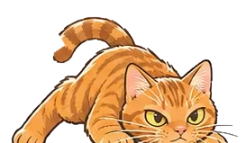
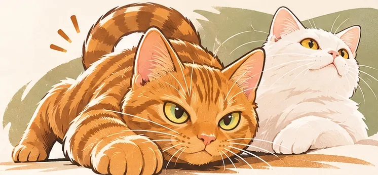
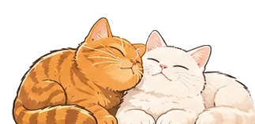
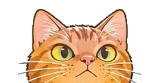

The doer · orange tabby
Hachiman
My orange tabby, endlessly curious, pounces on anything new. Just like me: when I get an idea, I can't help building a prototype first.
HACHIMAN STUDIO is the personal brand of Hachiman's Dad. Here is what I have built outside my day job, on my own or with partners: meeting rooms nobody can book, requirement documents that never end, course material nobody understands. I turn everyday hassles like these into small tools people actually want to open.



HACHIMAN STUDIO is my personal brand. It is not a registered business and not run for profit. The studio is just me: some works here I built alone and some with colleagues and friends, and each one says which part was mine.
By day I work in the digital department of a financial company, so I know internal processes, compliance and security constraints well. Programming is a hobby I started teaching myself in 2023. Rather than turning it into a business, I enjoy solving the hassles around me one by one and seeing people actually use the results every day.
Hachiman and Olleh are my two cats. Their personalities match the two moods I am in when I build things, so they became the brand's name and mascots.

My orange tabby, endlessly curious, pounces on anything new. Just like me: when I get an idea, I can't help building a prototype first.

My white long-haired cat, calm and careful, sniffs everything before trusting it. She reminds me to check data, privacy and details once more before launch.
Have an idea, or a problem at work, and wonder whether code could solve it, and how? Email me. I will use my experience to help you think through what could work. These are the areas I know well enough to give concrete advice.
Bookings, rotas, approvals, stats dashboards: could those spreadsheets and group chats become one good web page?
Can AI plug into your workflow? MCP connectors, knowledge search, local models, and where a human should still confirm.
Turn a fuzzy idea into requirements, flowcharts and a clickable prototype, so it is clear what to build and what not to.
How can simulators, quizzes and game design turn hard topics into something you learn by playing?
Open a card for details. Some works have a demo you can try, with made-up data. Demos and linked sites are in Chinese.
No need for a full document; a few sentences are enough.
What you want to solve, who would use it, how it is done today. A few sentences will do.
I reply with a few questions to help shape the idea into clearer requirements and scope.
Suggested approaches, suitable tools or technology, and the smallest version worth trying first.
If it is something I can do and enjoy, we can build a prototype together; if it is beyond me, we bring in partners.
Scraping stock prices with Python, serving an API with Flask, a MongoDB member system: building a website step by step.
Party seat draws, MBTI grouping, a learning-rewards platform and the first meeting-room booking system.
MeetBook added LINE and AI-assistant access and moved to Cloudflare; AutoML Workbench, TongLing and CS LAB followed.
Named after my two cats, Hachiman and Olleh, gathering past work and starting concept consulting.
A half-formed idea, a hassle you want gone, or curiosity about whether AI could help: all welcome. Write in English or Chinese. This is my spare time, so replies may take a few days.

No. It is a personal interest: sharing experience and helping you find a direction. There are no formal quotes or contracts.
It depends. For a small tool or prototype within the areas I know, we can talk about building it together. Formal paid work is possible too, but I am one person with limited time and scale, so I cannot take on large projects or long-term support the way a company can.
I will tell you plainly and point you in a useful direction where I can. People with the right skills are very welcome to collaborate.
Some alone, some with colleagues and friends. Each work's details include "My role", the part I was responsible for.